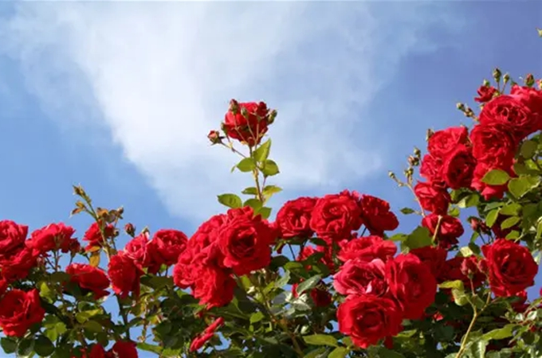

洛神玫瑰花语及寓意是什么？
回答时间： 2023-01-30
最佳答案

洛神玫瑰花语：矜持，花瓣包裹花心守护着自己，像是坚定自我的人；信仰，传说一位女子拯救了一个国家，被人们视为信仰；等待，其花期较晚且短需耐心等待；希望，外表给人朝气蓬勃的感受，适合赠送给情绪低迷的朋友。寓意：恋爱时的感觉，其口感酸涩令人不能自拔，久久的回味着。
洛神玫瑰花语
1、矜持
洛神玫瑰的花语是矜持，其花朵在花期绽放之时，花瓣会将花心紧紧的包裹住，保护着脆弱的自己，也像是一个坚定自我的人，将洛神花赠送于喜欢的人，可以表现出对方的坚守让自己的攻势毫无进展，希望对方可以卸下防备彼此坦诚相待。
2、信仰
洛神玫瑰的花语是信仰，洛神花的传说为一位女子嫁到邻国，为其带去了生命的希望，拯救了一个国家，被人民奉视为信仰，一直的尊敬热爱着其，适合赠送于对自己有帮助的人，以示自己的感恩之意。
3、等待
洛神玫瑰的花语是等待，洛神花的花期在每年的十月份，花期比较短一朵花只会开一天，故此想要见证洛神玫瑰花朵绽放的美丽，需要耐心的等待花期，适合赠送给自己喜欢的人，向对方告白自己等待其的到来已经许久。
4、希望
洛神玫瑰的花语是希望，洛神玫瑰的花朵色彩为鲜艳的红色，十分的艳丽明亮，给予着人一种朝气蓬勃和积极向上的感触，适合赠送于朋友，表现对方如同洛神玫瑰的外表一般的美好，鼓励其不要轻易的放弃，人生还有许多的美好之处。
洛神玫瑰寓意
洛神玫瑰的寓意是恋爱时的感觉，洛神玫瑰在作为花茶冲泡饮用时，口感酸涩，如同爱情给予人的感受一般，酸涩却又不能放弃，还要反复的品尝其中的滋味，其花朵的外表红艳张扬，也如爱情一般热烈。
本站文章均来自互联网，仅供学习参考，如有侵犯您的版权，请邮箱联系我们删除！